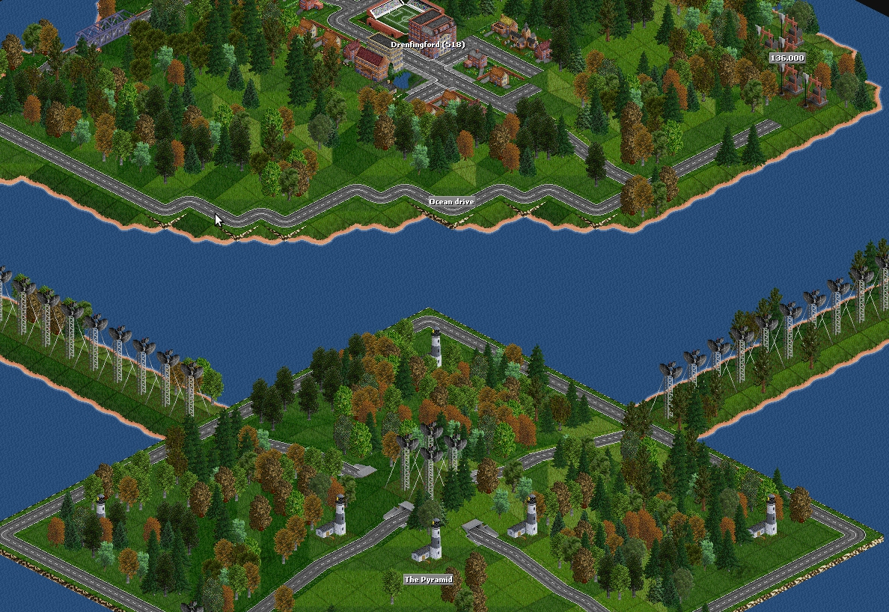

OSQC the follow up … at last
It has been way to long, but here it is the second OpenTTDCoop Scenario Quest Competition. In the scenario file you’ll find the goals for this map. Deadline to submit the game is August 31st 23:59 CEST. Submitting can be done by raising an issue at the OTTD Dev Zone under category OSQC. Judgement will be done by members of OTTD. 

What you need to play OSQC:
You can add your game at the OSQC project. More details about judging can be found at the OSQC wiki page. Remember changing game settings a.k.a. cheating will disqualify your submission.
If you have any questions, post them here.
Good luck with the competition and enjoy the game.
Update: All GRF’s needed can be found by clicking here

Categories: Community News, OpenTTD, osqc
Chris_Booth August 2, 2010 22:41
you need to change OTTD version as it doesn’t work with 1.0.2 or 1.0.3
tneo August 14, 2010 16:10
It does work with 1.02. It has been edited, saved and tested with that version specifically. And after version 1.0 (if I’m correct) it is downwards compatible anyway.
Further more:
First submission is in. Hopefully more will follow soon. 🙂
tneo August 26, 2010 20:10
Added GRF info to post…
Chris_Booth September 13, 2010 19:44
Sorry I gave save wrong name, but will be finished soon.
P.S. don’t hold your breath soon for me is an age for you lol